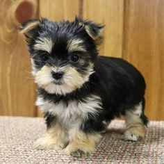

Mixed Breed Dogs
Friendly, Fluffy, Loving - what else do you need?
They are all rescue dogs and they are vaccinated, sterilised, dewormed, deflea'ed and infused with love and cuddles.
They are all house trained and each one has their own unique personality
They are enjoying their lives at A Home for Your Pet but I they would really love to find their new forever home.
Please Adopt These Cuties!
Hi, I'm Buddy

Breed: Morkie
Age: 3 years old
Gender: Male
This adorable Morkie is a cross between a Maltese and a Yorkshire terrier.
He is small, he loves attention and is verxy protective.
|
Hi, we are Ace & Benji

Breed: Weimador
Age: 4 years old
Genders: Male
They are a cross between a Weimaraner and Labrador.
These two exhibit boundless energy yet a friendly temperament
|